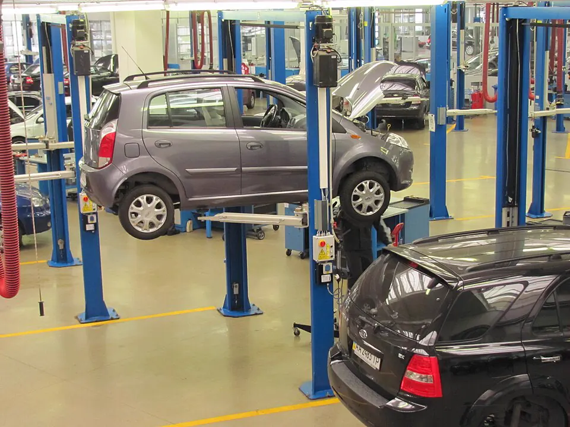
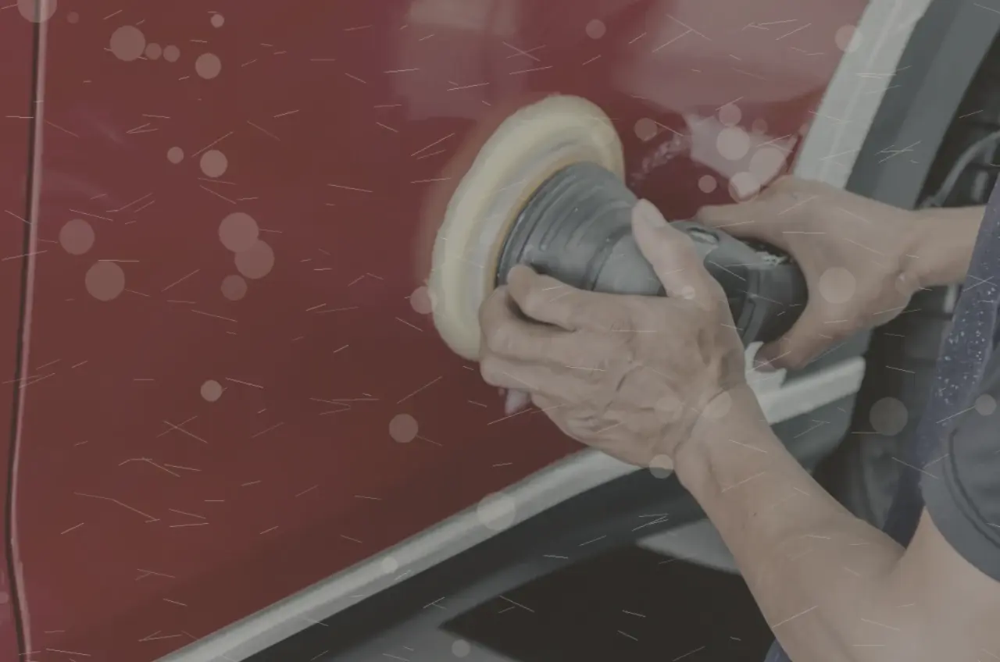

О нас
Кто мы, как работаем и почему нам можно доверить машину.
Мастерская на Складской
Работаем с 2014 года. Четыре мастера, три подъёмника и отдельный бокс под покраску, поэтому кузовные работы не мешают обычному ремонту.
Чаще всего к нам ездят на Kia, Hyundai, Toyota, Renault, Lada, Volkswagen, Skoda, Nissan, Chery и Haval. Берём легковые, кроссоверы и коммерческие до 3,5 т — Газель, Транзит. Грузовики не обслуживаем: лучше честно сказать, чем взять и сделать плохо.
Правило одно: машину отдаём такой, какой сами хотели бы её забрать. Цену называем заранее, старые детали отдаём, всё лишнее согласуем звонком.

- 12 летработаем на Складской, с 2014 года
- 4мастера
- 3подъёмника и покрасочный бокс
- 6 мес.гарантии или 10 000 км


Мастера
Четыре мастера: двое на ремонте и ТО, диагност и кузовщик-маляр. Каждую машину ведёт один мастер — с ним и говорите.


Как проходит ремонт
Звоните или оставляете заявку
Договариваемся о времени. Если не знаете, что сломалось, — начнём с диагностики.
Принимаем машину при вас
Записываем пробег, жалобы и что видно снаружи. Вы получаете копию.
Называем цену до начала работ
Отдельно работа и запчасти. Запчасти можно привезти свои.
Делаем только согласованное
Нашли ещё что-то — сначала звоним вам, без вашего «да» не делаем.
Отдаём машину и старые детали
Заказ-наряд с гарантией 6 месяцев или 10 000 км. Оплата наличными, картой или переводом.


Отзывы
Пример отзывов. На вашем сайте будут настоящие отзывы ваших клиентов.
Пришёл с горящим чеком, через 40 минут показали распечатку: датчик кислорода. Заменили в тот же день, старый датчик отдали.
Записалась на ТО через сайт вечером, утром перезвонили. Без навязывания лишнего, всё по смете.
Встал на трассе под Медным. Мастер приехал через час, дотянули до сервиса своим ходом.
Реквизиты
Реквизиты ИП — на вашем сайте будут ваши